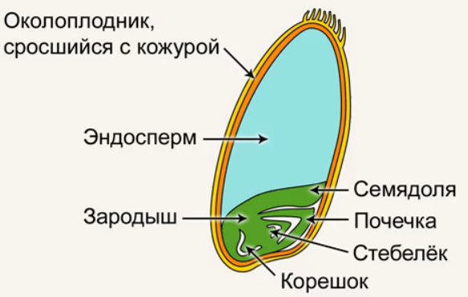
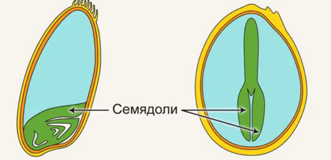
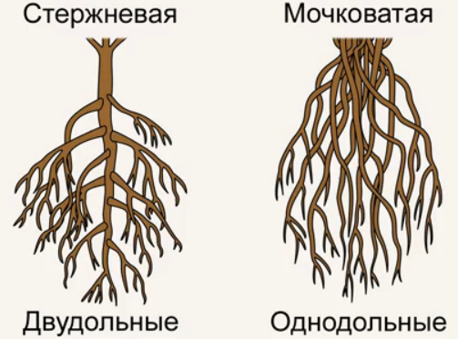
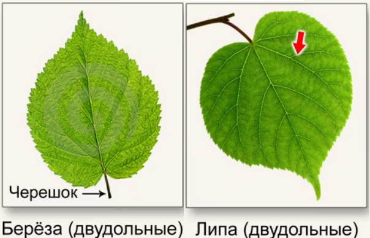
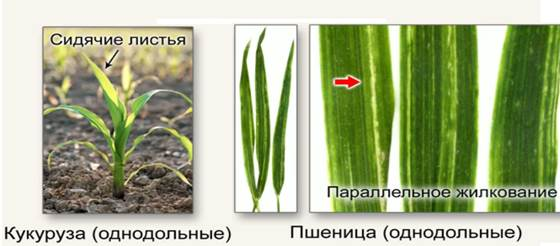
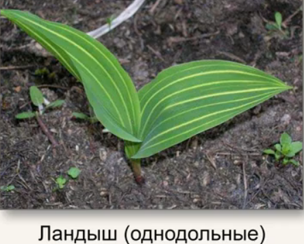
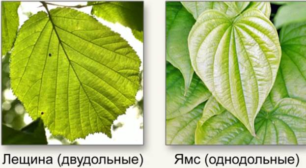
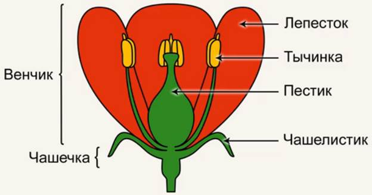
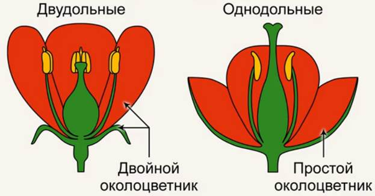

Цветковые растения делятся на два класса – двудольные и однодольные, представители которых различаются по целому ряду признаков.

Рис. 1. Разрез зерновки пшеницы (класс однодольные) (Источник)
Зародыш семени состоит из корешка, стебелька, почечки, а также имеет особый вырост из стебелька – семядоли (Рис. 1). Семядоли, по сравнению с другими частями зародыша, – выросты достаточно крупные и даже немножко похожи на листья, это особые части зародыша, которые невозможно сопоставить ни с какими другими частями взрослого растения.
По количеству семядолей классы цветковых и различаются: у двудольных две семядоли в зародыше, а у однодольных – одна семядоля (Рис. 2). Эти классы отличаются друг от друга количеством частей цветка, анатомией стеблей и корней, жилкованием листьев и развитием тканей, но по семядолям двудольные и однодольные отличаются самым надежным образом.

Рис. 2. Семядоли пшеницы (однодольные) и фиалки (двудольные) (Источник)
У двудольных и однодольных различная корневая система. У двудольных мы встречаем стержневую корневую систему, а у однодольных чаще всего встречается мочковатая корневая система, то есть не содержащая заметного главного корня(Рис. 3).

Рис. 3. Отличие корневых систем (Источник)
Впрочем, бывают и исключения, например при вегетативном размножении, когда мы срезаем веточку и ставим в воду, у нас укорененная веточка будет с мочковатой коренной системой независимо от того, к двудольным или однодольным она относится.
Листья двудольных растений выглядят наиболее привычным для нас образом, они с черешками, на которых лист отрастает от стебля. Листья у двудольных растений широкие, у них сетчатое жилкование – это означает, что самые крупные жилки у таких листьев ветвятся (Рис. 4).

Рис. 4. Черешок и жилки двудольных растений (Источник)
У однодольных растений листья обычно не имеют черешка, они отрастают прямо от стебля, как бы сидят на стебле, ученые так и называют их – сидячие листья. Сами по себе листья однодольных растений узкие и длинные, жилки, проходя вдоль всего листа, идут параллельно друг другу, такое жилкование называется параллельным (Рис. 5).

Рис. 5. Сидячие листья и параллельное жилкование однолетних растений (Источник)
Бывают у однодольных и широкие листья, тогда жилки, не ветвясь, проходят по листу дугами, такое жилкование называется дуговое (Рис. 6).

Рис. 6. Дуговое жилкование (Источник)
Итак, у двудольных растений листья черешковые с сетчатым жилкованием, у однодольных растений листья сидячие, не имеют черешка и с жилкованием параллельным или дуговым (Рис. 7).

Рис. 7. Отличие листьев (Источник)
Самое существенное отличие двудольных растений от однодольных растений кроется в строении цветка. У цветка части его располагаются на цветоложе кругами, у двудольных мы можем ясно увидеть невзрачную чашечку, состоящую из чашелистиков, и яркий венчик, состоящий из лепестков. Глубже в цветке мы видим тычинки и пестики, однако не всегда мы можем заметить разделение на чашечку и венчик (Рис. 8).

Рис. 8. Цветок двудольных растений (Источник)
Если у цветка нет деления на чашечку и венчик, то про такой цветок говорят, что у него простой околоцветник. А если у цветка есть разделение на чашечку и венчик, то мы говорим, что у этого цветка двойной околоцветник.

Рис. 9. Отличие цветков (Источник)
У двудольных растений околоцветник двойной, у однодольных он простой (Рис. 9). Здесь также могут быть свои исключения, например, если растение опыляется ветром, ему не выгодно иметь крупный околоцветник, ему не стоит выращивать крупный венчик или крупную чашечку, так как эти части будут мешать ветру проникать в цветок и переносить пыльцу. Поэтому если цветок приспособлен к опылению ветром, то и у однодольного, и у двудольного растения мы можем столкнуться со случаем отсутствия чашечки и венчика, увидеть простой околоцветник.
Мы рассмотрели самые важные отличия, по которым проще всего отличить два класса растений, двудольные и однодольные.
Список литературы
1. Пасечник В.В. Биология 6 класс. Бактерии, грибы, растения. – Дрофа, 2011.
2. Корчагина В.А. Биология 6-7 классы. Растения, бактерии, грибы, лишайники. – 1993.
3. Пономарева И.Н., Корнилова О.А., Кучменко В.С. Биология 6 класс. – 2008.
Домашнее задание
1. Что такое семядоля и какова ее роль?
2. Какие корневые системы встречаются у двудольных и однодольных растений?
3. В чем отличие листьев двудольных и однодольных растений?
Дополнительные рекомендованные ссылки на ресурсы сети Интернет
1. Интернет-портал Bio-faq.ru (Источник).
2. Интернет-портал Blgy.ru (Источник).
3. Интернет-портал Biofile.ru (Источник).